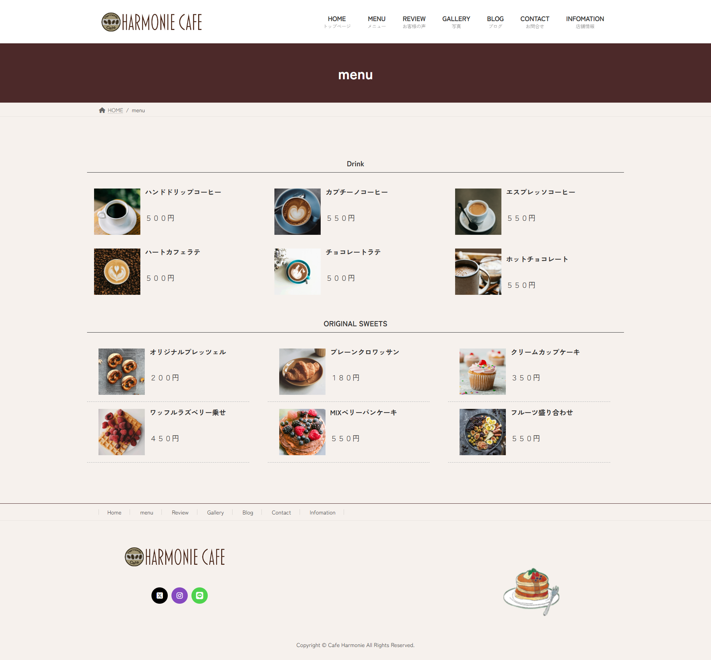
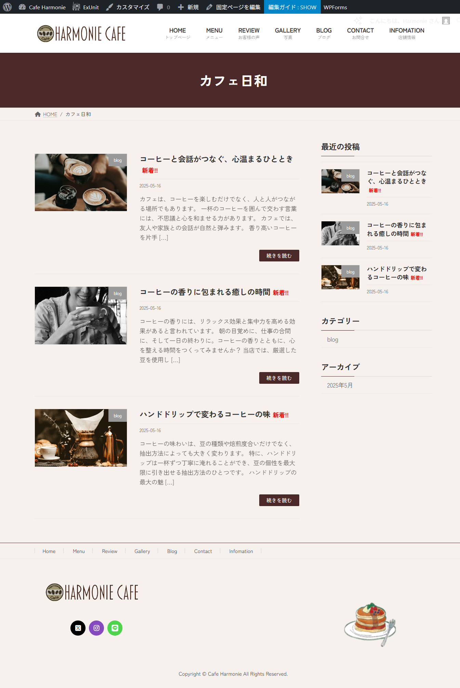
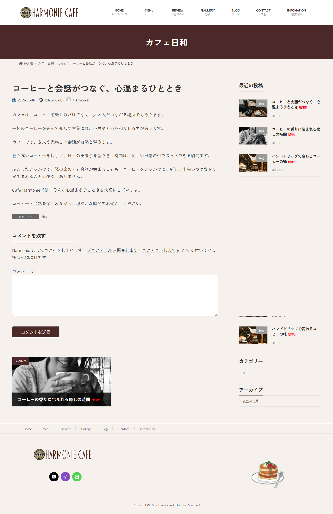
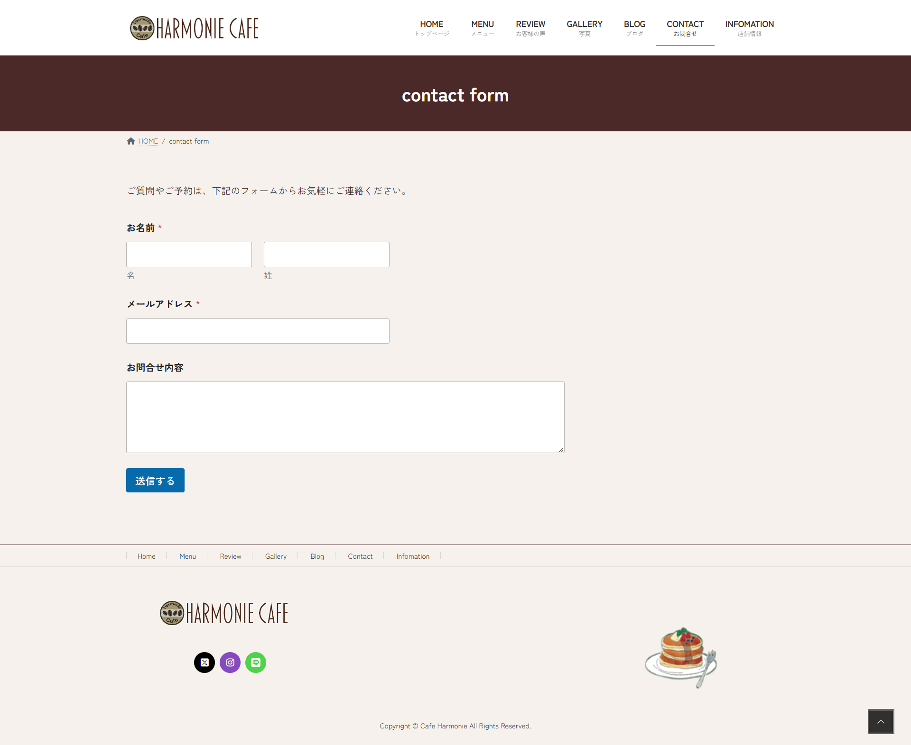
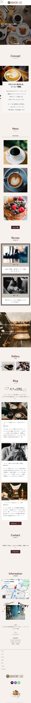
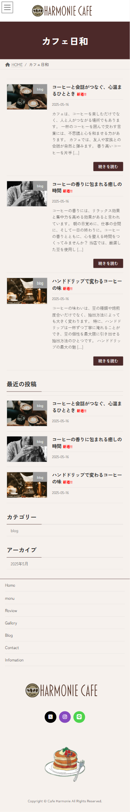
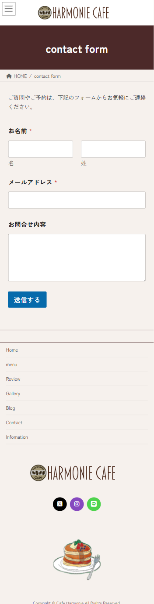

自主製作 カフェホームページ
担当
WordPress構築・コーディング
サイトの目的
店舗の紹介・情報発信
製作期間
7日間
使用技術
WordPress・CSS
デザインについて
・写真が映えるよう、シンプルな配色、それぞれのスペースを十分にとった配置にして、写真が目立つようにする。
・kafeのイメージに合わせて、落ち着いたベージュ・茶系をベースにする。
・配色やイラストで、ナチュラルで優しい雰囲気にする。
構成について
・コンセプトやメニューに加え、オーナー様の想いや日常を発信できるブログ機能を設け、お客様へ来店して頂くきっかけになるよう工夫する。
・無料のWordPressテンプレートを活用することで、開発費を抑えつつオリジナリティを確保する。
・ブログやメニュー更新がご自身でも簡単に行えるよう、初心者にも優しい管理画面にする。
・WordPressのプラグインを活用し、SEO対策を行う。








